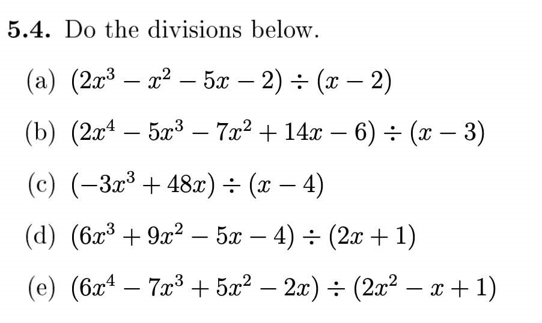
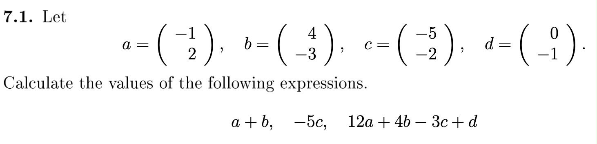

文系でもCS留学できる？
みなさんこんにちは。
ハンガリー留学ラボのユウゴです。
今回は「文系でもCS留学できるのか」について書いてみます。
CSとはComputer Scienceの略で、プログラミング、データベース、OSなどの情報系分野を学ぶ学問です。
IT系企業が成長している今、CS留学に興味がある方には、ぜひ読んでいただきたいと思います。
文系でも大丈夫？
結論から言うと、文系でも大丈夫です。
私が在学するデブレツェン大学のComputer Science学科では、数学系の授業が全体の1割程度で、残りの9割ほどは情報系の授業です。
つまり、日本の高校から進学する場合、文系か理系かに関係なく、大学で学ぶ内容の大部分が未履修の範囲になります。
日本の高校で数学や物理に苦戦して文系へ進んだ方も、数学や物理が好きで理系へ進んだ方も、情報系の専門科目については、ほとんど同じスタートラインに立つことになります。
デブレツェン大学CS学科の授業イメージ
- 数学系の授業：約1割
- 情報系の授業：約9割
- 情報系科目は多くの学生が未経験から始める
そう聞くと、「文系でも案外大丈夫かもしれない」と思えるのではないでしょうか。
数学・物理はどれくらい必要？
文系から進学する場合、一番不安になるのは数学や物理だと思います。
「日本の高校数学でも苦戦したのに、大学数学を英語で学ぶなんて不安しかない」と感じるのは当然です。
ただし、少なくとも私が在学するデブレツェン大学のComputer Science学科では、必要以上に心配する必要はないと思います。


授業の後半になると少しずつレベルは上がりますが、最初は多項式の割り算や簡単なベクトル計算などから始まります。
基本的には、日本の高校数学の教科書に載っている例題レベルの内容が中心です。
テストでも、日本の大学入試や高校の定期考査のような難しい応用問題ばかりが出るわけではありません。
教科書の基本例題を理解し、授業内容を復習していれば、文系出身でも十分対応できると思います。
内容が進むと、数学IIIで扱う微分・積分なども出てきます。
ただし、私が受けた授業では基本的な例題レベルが中心だったため、数学IIIを履修していなかった人でも、大学入学後に学び直せば対応できると思います。
物理・化学は必要？
物理や化学については、私が知る限り、純粋なComputer Science専攻ではほとんど扱いません。
つまり、物理が苦手な方にとっては、かなり安心できるポイントだと思います。私自身も、物理を履修しなくてよいことには助けられました。
ハンガリーの大学の学士課程には、3年間で卒業できるプログラムが多くあります。
日本やアメリカの大学のように一般教養科目を幅広く履修するのではなく、1年次から専門科目を中心に学ぶためです。
※BMEやÓbuda UniversityなどのComputer Science Engineering系プログラムでは、物理が必修になっている場合があります。大学名だけで判断せず、必ずカリキュラムを確認してください。
物理をできるだけ避けたい場合は、Computer ScienceとComputer Science Engineeringの違いを確認したうえで、進学先を選ぶことが大切です。
情報系の授業は初心者でも大丈夫？
情報系の授業についても、初心者から始めることは十分可能です。
私自身、プログラミング、データベース、OSなどの情報系分野は完全な初心者でした。
高校時代にも情報の授業はありましたが、当時は情報分野にほとんど興味がなく、授業内容もほぼ覚えていませんでした。
そのため、大学入学時は事前知識がほとんどない状態でした。
それでも、今のところ大学の授業や試験はなんとか乗り越えられています。
文系出身だから情報系科目についていけない、ということではありません。授業後に復習し、分からないところを少しずつ埋めていけば、十分対応できると思います。
共通テストの「情報I」の問題集や参考書には、大学で扱う内容につながる基礎事項も多く載っています。
プログラミングや情報系分野に不安がある方は、留学前に一度目を通しておくと、大学の授業へ入りやすくなると思います。
文系出身者が準備しておくとよいこと
留学前に準備しておくと安心なこと
- 高校数学の基本例題を復習する
- 数学の英単語を確認する
- 「情報I」の参考書で基礎を確認する
- Pythonなどの基本的なプログラミングに触れておく
- 志望大学のカリキュラムを確認する
入学前から高度なプログラミングができる必要はありません。
ただし、数学の基礎や簡単なプログラミングに触れておくだけでも、入学後の負担はかなり軽くなると思います。
まとめ
今回は、文系からでもCS留学できるのかについて紹介しました。
海外で理系科目を専攻することに対して、不安を感じる文系の方は多いと思います。
ただし、Computer Scienceでは、多くの学生が大学に入ってから情報系分野を本格的に学び始めます。
文系か理系かという違いよりも、入学後に継続して勉強できるかどうかの方が大切だと感じています。
この記事を通して、CS留学への不安が少しでも和らげば幸いです。
なお、今回の記事は、あくまで私が在学するデブレツェン大学のComputer Science学科をもとにした内容です。
大学やプログラムによって、数学・物理・プログラミングの比重は異なります。ほかの大学について詳しく知りたい方は、各大学のカリキュラムを確認したり、実際に在学している現役生へ相談したりすることをおすすめします。